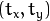
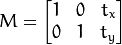

OpenCV
using Python Programming
Created by Ganesh Bhosale in Dwij IT Solutions

Your support
Like this Python tutorial, our tutorials are always open-source for learners. Like our facebook page to get more free tutorial updates.
OpenCV (Computer Vision) Programming using Python
Installation of OpenCV
- Linux*
- Mac OSX
- Windows
- Android
- iOS
INSTALL (Linux)
$ sudo rm -vf /var/lib/apt/lists/*
$ sudo apt-get update
$ sudo apt-get install python-dev
$ sudo apt-get install libopencv-dev python-opencv
Download Resources
http://dwij.net/tuts/python-opencv/resources.zipOpenCV
Getting Started with Images
Opening Image
import numpy as np
import cv2
img = cv2.imread("messi5.jpg")
cv2.imshow('image',img)
cv2.waitKey(0)
cv2.destroyAllWindows()
Capture Image from Camera
import numpy as np
import cv2
cap = cv2.VideoCapture(0)
if cap:
print "Press any key to start..."
cv2.WaitKey(0);
img = cap.read()
if not img:
print "Frame is NULL"
else:
cv2.imshow('frame', img)
cv2.WaitKey(0)
else:
print "Capture is NULL"
cv2.DestroyAllWindows()
Capture Video from File
import numpy as np
import cv2
import time
cap = cv2.VideoCapture('traffic.avi')
while(cap.isOpened()):
ret, frame = cap.read()
gray = cv2.cvtColor(frame, cv2.COLOR_BGR2GRAY)
cv2.imshow('frame',gray)
time.sleep(0.10) # wait for 100ms
if cv2.waitKey(1) & 0xFF == ord('q'):
break
cap.release()
cv2.destroyAllWindows()
Capture Video from Camera
import numpy as np
import cv2
import time
cap = cv2.VideoCapture(0)
while(True):
# Capture frame-by-frame
ret, frame = cap.read()
# Our operations on the frame come here
gray = cv2.cvtColor(frame, cv2.COLOR_BGR2GRAY)
# Display the resulting frame
cv2.imshow('frame',gray)
time.sleep(0.10) # wait for 100ms
if cv2.waitKey(1) & 0xFF == ord('q'):
break
# When everything done, release the capture
cap.release()
cv2.destroyAllWindows()OpenCV
Drawing Functions
Line
import numpy as np
import cv2
img = cv2.imread("messi5.jpg")
# Draw a diagonal blue (BGR) line with thickness of 5 px
cv2.line(img, (0,0), (100,100), (255,0,0), 5)
cv2.imshow('image', img)
cv2.waitKey(0)
cv2.destroyAllWindows()Rectangle
import numpy as np
import cv2
img = cv2.imread("messi5.jpg")
# Draw a green rectangle from (top left) to (bottom-right) corner
cv2.rectangle(img, (10,10), (100,100), (0,255,0), 3)
cv2.imshow('image', img)
cv2.waitKey(0)
cv2.destroyAllWindows()Circle
import numpy as np
import cv2
img = cv2.imread("messi5.jpg")
# Draw a circle with center coordinates, radius and color
cv2.circle(img, (100,63), 63, (0,0,255), -1)
cv2.imshow('image', img)
cv2.waitKey(0)
cv2.destroyAllWindows()Text
import numpy as np
import cv2
img = cv2.imread("messi5.jpg")
font = cv2.FONT_HERSHEY_SIMPLEX
# Text with position from bottom-left corner,
# Font type, Font Size, color, thickness, lineType
cv2.putText(img, 'OpenCV', (10,60), font, 2, (255,255,255), 2, cv2.CV_AA)
cv2.imshow('image', img)
cv2.waitKey(0)
cv2.destroyAllWindows()OpenCV
Core Operations
Access and Modify pixel
>>> import cv2
>>> import numpy as np
>>> img = cv2.imread('messi5.jpg')
# accessing pixel with BGR Values
>>> px = img[100,100]
>>> print px
[157 166 200]
# accessing only blue pixel
>>> blue = img[100,100,0]
>>> print blue
157
Modify the pixel
>>> import cv2
>>> import numpy as np
>>> img = cv2.imread('messi5.jpg')
>>> img[100,100] = [255,255,255]
>>> print img[100,100]
[255 255 255]
Note: Accessing each and every pixel values and modifying it will be very slow and it is discouraged.
Modify the pixel
For individual pixel access Numpy array methods array.item() and array.itemset() is considered to be better.
>>> import cv2
>>> import numpy as np
>>> img = cv2.imread('messi5.jpg')
# accessing RED value - array.item(row, col, bgr)
>>> img.item(10,10,2)
59
# modifying RED value - array.itemset(pixel, value)
>>> img.itemset((10,10,2),100)
>>> img.item(10,10,2)
100
Access Image Properties
Includes number of rows, columns and channels, type of image data, number of pixels
>>> import cv2
>>> import numpy as np
>>> img = cv2.imread('messi5.jpg')
# returns a tuple of number of rows, columns and channels
>>> print img.shape
(342, 548, 3)
If image is grayscale, tuple returned contains only number of rows and columns
Access Image Properties
>>> import cv2
>>> import numpy as np
>>> img = cv2.imread('messi5.jpg')
# Total number of pixels
>>> print img.size
562248
# Image datatype
>>> print img.dtype
uint8
OpenCV
Image Processing
Scaling
import cv2
import numpy as np
img = cv2.imread('messi5.jpg')
res = cv2.resize(img,None,fx=2, fy=2, interpolation=cv2.INTER_CUBIC)
# OR
height, width = img.shape[:2]
res = cv2.resize(img,(2*width, 2*height), interpolation=cv2.INTER_CUBIC)
cv2.imshow('image', img)
cv2.imshow('image_scaled', res)
cv2.waitKey(0)
cv2.destroyAllWindows()Translation
shifting of object’s location in (x,y) direction -> 
transformation matrix - import cv2
import numpy as np
img = cv2.imread('messi5.jpg',0)
rows,cols = img.shape
M = np.float32([[1,0,100],[0,1,50]])
dst = cv2.warpAffine(img,M,(cols,rows))
cv2.imshow('img',dst)
cv2.waitKey(0)
cv2.destroyAllWindows()Thresholding
- cv2.THRESH_BINARY
- cv2.THRESH_BINARY_INV
- cv2.THRESH_TRUNC
- cv2.THRESH_TOZERO
- cv2.THRESH_TOZERO_INV
MatPlotLib
sudo rm -vf /var/lib/apt/lists/*
sudo apt-get update
sudo apt-get install python-pip
sudo apt-get install python-tk
sudo apt-get install python-dev
sudo pip install matplotlib
Thresholding
import cv2
import numpy as np
from matplotlib import pyplot as plt
img = cv2.imread('cameraman.jpg', 0)
ret,thresh1 = cv2.threshold(img,127,255,cv2.THRESH_BINARY)
ret,thresh2 = cv2.threshold(img,127,255,cv2.THRESH_BINARY_INV)
ret,thresh3 = cv2.threshold(img,127,255,cv2.THRESH_TRUNC)
ret,thresh4 = cv2.threshold(img,127,255,cv2.THRESH_TOZERO)
ret,thresh5 = cv2.threshold(img,127,255,cv2.THRESH_TOZERO_INV)
titles = ['Original Image','BINARY','BINARY_INV','TRUNC','TOZERO','TOZERO_INV']
images = [img, thresh1, thresh2, thresh3, thresh4, thresh5]
for i in xrange(6):
plt.subplot(2,3,i+1),plt.imshow(images[i],'gray')
plt.title(titles[i])
plt.xticks([]),plt.yticks([])
plt.show()Smoothing
import cv2
import numpy as np
from matplotlib import pyplot as plt
img = cv2.imread('messi5.jpg')
kernel = np.ones((5,5),np.float32)/25
dst = cv2.filter2D(img,-1,kernel)
plt.subplot(121),plt.imshow(img),plt.title('Original')
plt.xticks([]), plt.yticks([])
plt.subplot(122),plt.imshow(dst),plt.title('Averaging')
plt.xticks([]), plt.yticks([])
plt.show()Erosion
import cv2
import numpy as np
from matplotlib import pyplot as plt
img = cv2.imread('j.png', 0)
kernel = np.ones((5,5), np.uint8)
erosion = cv2.erode(img,kernel,iterations = 1)
plt.subplot(121),plt.imshow(img),plt.title('Original')
plt.xticks([]), plt.yticks([])
plt.subplot(122),plt.imshow(erosion),plt.title('Erosion')
plt.xticks([]), plt.yticks([])
plt.show()Dilation
import cv2
import numpy as np
from matplotlib import pyplot as plt
img = cv2.imread('j.png', 0)
kernel = np.ones((5,5), np.uint8)
dilation = cv2.dilate(img,kernel,iterations = 1)
plt.subplot(121),plt.imshow(img),plt.title('Original')
plt.xticks([]), plt.yticks([])
plt.subplot(122),plt.imshow(dilation),plt.title('Dilation')
plt.xticks([]), plt.yticks([])
plt.show()Opening
import cv2
import numpy as np
from matplotlib import pyplot as plt
img = cv2.imread('j_noise.png', 0)
kernel = np.ones((5,5), np.uint8)
opening = cv2.morphologyEx(img, cv2.MORPH_OPEN, kernel)
plt.subplot(121),plt.imshow(img),plt.title('Original')
plt.xticks([]), plt.yticks([])
plt.subplot(122),plt.imshow(opening),plt.title('Opening')
plt.xticks([]), plt.yticks([])
plt.show()Closing
import cv2
import numpy as np
from matplotlib import pyplot as plt
img = cv2.imread('j_noise2.png', 0)
kernel = np.ones((5,5), np.uint8)
closing = cv2.morphologyEx(img, cv2.MORPH_CLOSE, kernel)
plt.subplot(121),plt.imshow(img),plt.title('Original')
plt.xticks([]), plt.yticks([])
plt.subplot(122),plt.imshow(closing),plt.title('Closing')
plt.xticks([]), plt.yticks([])
plt.show()Morphological Gradient
import cv2
import numpy as np
from matplotlib import pyplot as plt
img = cv2.imread('j_noise2.png', 0)
kernel = np.ones((5,5), np.uint8)
closing = cv2.morphologyEx(img, cv2.MORPH_CLOSE, kernel)
plt.subplot(121),plt.imshow(img),plt.title('Original')
plt.xticks([]), plt.yticks([])
plt.subplot(122),plt.imshow(closing),plt.title('Closing')
plt.xticks([]), plt.yticks([])
plt.show()Canny Edge Detection
import cv2
import numpy as np
from matplotlib import pyplot as plt
img = cv2.imread('j_noise2.png', 0)
kernel = np.ones((5,5), np.uint8)
closing = cv2.morphologyEx(img, cv2.MORPH_CLOSE, kernel)
plt.subplot(121),plt.imshow(img),plt.title('Original')
plt.xticks([]), plt.yticks([])
plt.subplot(122),plt.imshow(closing),plt.title('Closing')
plt.xticks([]), plt.yticks([])
plt.show()Histograms

Histograms
import cv2
import numpy as np
from matplotlib import pyplot as plt
img = cv2.imread('cameraman.jpg', 0)
cv2.imshow('img',img)
cv2.waitKey(0)
plt.hist(img.ravel(),256,[0,256]);plt.show()
cv2.destroyAllWindows()OpenCV
Feature Detection and Description
Face Detection
import numpy as np
import cv2
face_cascade = cv2.CascadeClassifier('haarcascades/haarcascade_frontalface_default.xml')
eye_cascade = cv2.CascadeClassifier('haarcascades/haarcascade_eye.xml')
img = cv2.imread('arnold.jpg')
gray = cv2.cvtColor(img, cv2.COLOR_BGR2GRAY)
faces = face_cascade.detectMultiScale(gray, 1.3, 5)
for (x,y,w,h) in faces:
cv2.rectangle(img,(x,y),(x+w,y+h),(255,0,0),2)
roi_gray = gray[y:y+h, x:x+w]
roi_color = img[y:y+h, x:x+w]
eyes = eye_cascade.detectMultiScale(roi_gray)
for (ex,ey,ew,eh) in eyes:
cv2.rectangle(roi_color,(ex,ey),(ex+ew,ey+eh),(0,255,0),2)
cv2.imshow('img',img)
cv2.waitKey(0)
cv2.destroyAllWindows()Face Detection Output

References
Thank you
- Ganesh Bhosale
- Dwij IT Solutions
Did you liked this tutorial ?
Checkout more such tutorials on: http://dwij.net/tuts